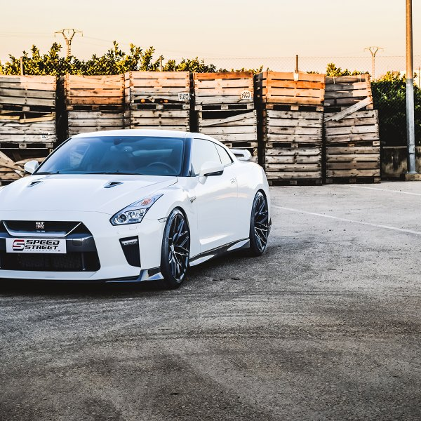

🎌 🙈 Japanese sports cars are the best in the world 🙈 🎌
 😈 Subaru wrx sti 😈 — седан, универсал, купе или хетчбэк японской фирмы Subaru, выпускается с 1992 года. Impreza появилась после снятия с производства популярной модели Subaru Leone/Loyale с устаревшими двигателями серии EA. Impreza стартовала с двигателями серии EJ, которые уже стали популярными в старшей модели, Subaru Legacy[источник не указан 1267 дней]. Модель Impreza существует в пяти поколениях.
В 2000 году появилась Subaru Impreza второго поколения. Автомобиль имел версии с кузовами седан и универсал (купе исчезло из модельного ряда).
В 2007 году вышла Subaru Impreza III поколения. На автомобильном рынке России данная модель была представлена в кузове хетчбэк с моторами 1,5 и 2 литра. Но в дальнейшем исходя из маркетинговых соображений коллективом Subaru в линейку кузовов Impreza был добавлен седан. В Россию седан поставляется лишь с мотором 1,5 л.
Четвертое поколение модели Subaru Impreza выпускается в Японии с 2011 года с кузовами седан и хэтчбек. Первоначально автомобиль поставлялся на российский рынок, но из-за низкого спроса в 2014 году его продажи были прекращены.
Пятое поколение модели Impreza продается с 2016 года.
В 2010 году представлена новая модификация Subaru Impreza XV, представляющая собой модель в кузове хетчбэк с клиренсом 185 мм, двигателем EJ204 объемом 1994 см³, более толстыми стабилизаторами поперечной устойчивости, более жесткими пружинами, амортизаторами и сайлентблоками, обвесом из ударопрочного пластика и штатными багажными рейлингами. Модель Impreza XV выпускалась в 2010 и 2011 годах, затем на смену ей пришла модель Subaru XV.
На автомобилях Subaru Impreza, подготовленных британской компанией Продрайв, было выиграно три личных титула чемпиона мира по ралли: Колин Макрей победил в 1995, Ричард Бёрнс в 2001 и Петтер Сольберг в 2003 годах. Также компания Subaru с моделью Impreza трижды первенствовала в зачете производителей чемпионата мира по ралли, с 1995 по 1997 год. На различных модификациях Subaru Impreza выиграно множество этапов чемпионата мира по ралли, в последний раз на Ралли Великобритании 2005ruen года.
Уход заводской команды Subaru из чемпионата мира сказался только на классе World Rally Carruen. В зачёте серийных автомобилей (PWRC) автомобили Subaru по-прежнему продолжали активно использоваться. На них становились чемпионами в сезонах 2003-2007 и 2011 года. В том числе побеждали на этапах PWRC «Импрезы» российской подготовки, команды «Успенский Ралли Техника». Шведский пилот Патрик Флодин выигрывал этапы «серийного чемпионата мира» в 2008, 2010 и 2011 годах, становился вице-чемпионом класса в 2010 и 2011 годах.
Система обнаружения объектов позади автомобиля Subaru Rear Vehicle Detection (SRVD), используя датчики, размещённые в заднем бампере автомобиля, обращает внимание водителя на объекты в «слепых зонах» сзади, а также предупреждает о потенциальной опасности столкновения при движении задним ходом.
Несмотря на спортивный характер WRX и WRX STI, Вы будете спокойны, зная об исключительных системах безопасности Subaru. Они включают в себя усиленный каркас кольцеобразной формы и семь подушек безопасности, включая коленную подушку безопасности для водителя. При помощи мультирежимной Системы динамической стабилизации (VDC) и Системы активного распределения крутящего момента (ATV), автомобиль будет помогать Вам избегать неприятных ситуаций. Ощущение уверенности подкреплено устойчивостью и железной хваткой системы симметричного полного привода.
2007 году дебютировала третья «Импреза», причем впервые — в кузове хэтчбек, годом позже в гамме появился седан, а вот версии с кузовом универсал не было. Автомобиль стал крупнее, но технически принципиально не изменился — оппозитные четырехцилиндровые моторы, полный привод, механическая или автоматическая коробки передач. На японском рынке, как и прежде, были и переднеприводные модификации.
На «Импрезу» устанавливали бензиновые двигатели 1.5 (107 л. с.), 2.0 (148 л. с.), 2.5 (170 л. с.) , а в 2009 году в Европе начали предлагать машину с двухлитровым турбодизелем мощностью 150 л. с. В Японии была еще и версия с двухлитровым бензиновым турбомотором. Версии WRX и WRX STI получили 2,5-литровый двигатель с турбонаддувом, в первом случае он развивал 230–265 л. с., а во втором — до 300 сил, причем на мелкосерийных спецверсиях были даже форсированные до 400 л. с. моторы. Впервые «заряженные» модификации «Импрезы» предлагались не только с механической, но и с автоматической коробкой передач.
Пережив малозаметный рестайлинг в 2009 году, эта машина продержалась на конвейере до 2011 года, а вот «горячие» версии продолжили выпускать, но уже под отдельным названием Subaru WRX и Subaru WRX STI. В 2010 году на базе хэтчбек была еще создана модификация Impreza XV с увеличенным дорожным просветом и «внедорожным» пластиковым обвесом.
В 2000 году появилась Subaru Impreza второго поколения. Автомобиль имел версии с кузовами седан и универсал (купе исчезло из модельного ряда), а переднеприводные машины предлагались только в Японии, в остальных странах можно было приобрести только полноприводную «Импрезу».
Под капотом стояли «оппозитники» объемом 1,5, 1,6, 2,0 и 2,5 литра. Турбированная Impreza WRX оснащалась двухлитровым мотором (215–250 л. с.), а с 2005 года — 2,5-литровым (230 сил). Версия WRX STI отличалась не только более мощным двигателем (265–280 л. с.), но и перенастроенной подвеской и наличием блокировки заднего дифференциала. Дважды, в 2002 и 2005 году, был проведен рестайлинг модели.
Седаны и универсалы Impreza появились в модельном ряду марки Subaru в 1992 году, а в 1995 году дебютировала версия с кузовом купе. Автомобиль оснащался четырехцилиндровыми оппозитными двигателями 1.6 (100 л. с.), 1.8 (115 л. с.) и 2.0 (135–155 л. с.), а в Японии была еще и модификация с 1,5-литровым мотором. Позднее на американский рынок были выведены версии 2.2 и 2.5 мощностью 135 и 165 сил соответственно. Subaru Impreza предалагалсь как с передним, так и с полным приводом, с 1997 года экспорт переднеприводных машин был прекращен. Коробка передач могла быть пятиступенчатой механической или четырехступенчатой автоматической.
Настоящую известность «Импрезе» принесли модификации с турбомоторами, на основе которых были созданы машины для раллийных гонок. Двигатель версии WRX развивал 240 сил, а Subaru Impreza WRX STI получила форсированные до 250–305 варианты мотора. «Заряженные» машины предлагались только с «механикой» и полным приводом. В Европе была еще и Impreza GT с менее мощным 211-сильным силовым агрегатом.
В США покупателям предлагалась еще и Impreza Outback Sport с увеличенным дорожным просветом и пластиковым «внедорожным» обвесом. Аналогичная машина на японском рынке называлась Gravel Express, а под капотом у нее стоял мотор от версии WRX.💞🏁
😈 Subaru wrx sti 😈 — седан, универсал, купе или хетчбэк японской фирмы Subaru, выпускается с 1992 года. Impreza появилась после снятия с производства популярной модели Subaru Leone/Loyale с устаревшими двигателями серии EA. Impreza стартовала с двигателями серии EJ, которые уже стали популярными в старшей модели, Subaru Legacy[источник не указан 1267 дней]. Модель Impreza существует в пяти поколениях.
В 2000 году появилась Subaru Impreza второго поколения. Автомобиль имел версии с кузовами седан и универсал (купе исчезло из модельного ряда).
В 2007 году вышла Subaru Impreza III поколения. На автомобильном рынке России данная модель была представлена в кузове хетчбэк с моторами 1,5 и 2 литра. Но в дальнейшем исходя из маркетинговых соображений коллективом Subaru в линейку кузовов Impreza был добавлен седан. В Россию седан поставляется лишь с мотором 1,5 л.
Четвертое поколение модели Subaru Impreza выпускается в Японии с 2011 года с кузовами седан и хэтчбек. Первоначально автомобиль поставлялся на российский рынок, но из-за низкого спроса в 2014 году его продажи были прекращены.
Пятое поколение модели Impreza продается с 2016 года.
В 2010 году представлена новая модификация Subaru Impreza XV, представляющая собой модель в кузове хетчбэк с клиренсом 185 мм, двигателем EJ204 объемом 1994 см³, более толстыми стабилизаторами поперечной устойчивости, более жесткими пружинами, амортизаторами и сайлентблоками, обвесом из ударопрочного пластика и штатными багажными рейлингами. Модель Impreza XV выпускалась в 2010 и 2011 годах, затем на смену ей пришла модель Subaru XV.
На автомобилях Subaru Impreza, подготовленных британской компанией Продрайв, было выиграно три личных титула чемпиона мира по ралли: Колин Макрей победил в 1995, Ричард Бёрнс в 2001 и Петтер Сольберг в 2003 годах. Также компания Subaru с моделью Impreza трижды первенствовала в зачете производителей чемпионата мира по ралли, с 1995 по 1997 год. На различных модификациях Subaru Impreza выиграно множество этапов чемпионата мира по ралли, в последний раз на Ралли Великобритании 2005ruen года.
Уход заводской команды Subaru из чемпионата мира сказался только на классе World Rally Carruen. В зачёте серийных автомобилей (PWRC) автомобили Subaru по-прежнему продолжали активно использоваться. На них становились чемпионами в сезонах 2003-2007 и 2011 года. В том числе побеждали на этапах PWRC «Импрезы» российской подготовки, команды «Успенский Ралли Техника». Шведский пилот Патрик Флодин выигрывал этапы «серийного чемпионата мира» в 2008, 2010 и 2011 годах, становился вице-чемпионом класса в 2010 и 2011 годах.
Система обнаружения объектов позади автомобиля Subaru Rear Vehicle Detection (SRVD), используя датчики, размещённые в заднем бампере автомобиля, обращает внимание водителя на объекты в «слепых зонах» сзади, а также предупреждает о потенциальной опасности столкновения при движении задним ходом.
Несмотря на спортивный характер WRX и WRX STI, Вы будете спокойны, зная об исключительных системах безопасности Subaru. Они включают в себя усиленный каркас кольцеобразной формы и семь подушек безопасности, включая коленную подушку безопасности для водителя. При помощи мультирежимной Системы динамической стабилизации (VDC) и Системы активного распределения крутящего момента (ATV), автомобиль будет помогать Вам избегать неприятных ситуаций. Ощущение уверенности подкреплено устойчивостью и железной хваткой системы симметричного полного привода.
2007 году дебютировала третья «Импреза», причем впервые — в кузове хэтчбек, годом позже в гамме появился седан, а вот версии с кузовом универсал не было. Автомобиль стал крупнее, но технически принципиально не изменился — оппозитные четырехцилиндровые моторы, полный привод, механическая или автоматическая коробки передач. На японском рынке, как и прежде, были и переднеприводные модификации.
На «Импрезу» устанавливали бензиновые двигатели 1.5 (107 л. с.), 2.0 (148 л. с.), 2.5 (170 л. с.) , а в 2009 году в Европе начали предлагать машину с двухлитровым турбодизелем мощностью 150 л. с. В Японии была еще и версия с двухлитровым бензиновым турбомотором. Версии WRX и WRX STI получили 2,5-литровый двигатель с турбонаддувом, в первом случае он развивал 230–265 л. с., а во втором — до 300 сил, причем на мелкосерийных спецверсиях были даже форсированные до 400 л. с. моторы. Впервые «заряженные» модификации «Импрезы» предлагались не только с механической, но и с автоматической коробкой передач.
Пережив малозаметный рестайлинг в 2009 году, эта машина продержалась на конвейере до 2011 года, а вот «горячие» версии продолжили выпускать, но уже под отдельным названием Subaru WRX и Subaru WRX STI. В 2010 году на базе хэтчбек была еще создана модификация Impreza XV с увеличенным дорожным просветом и «внедорожным» пластиковым обвесом.
В 2000 году появилась Subaru Impreza второго поколения. Автомобиль имел версии с кузовами седан и универсал (купе исчезло из модельного ряда), а переднеприводные машины предлагались только в Японии, в остальных странах можно было приобрести только полноприводную «Импрезу».
Под капотом стояли «оппозитники» объемом 1,5, 1,6, 2,0 и 2,5 литра. Турбированная Impreza WRX оснащалась двухлитровым мотором (215–250 л. с.), а с 2005 года — 2,5-литровым (230 сил). Версия WRX STI отличалась не только более мощным двигателем (265–280 л. с.), но и перенастроенной подвеской и наличием блокировки заднего дифференциала. Дважды, в 2002 и 2005 году, был проведен рестайлинг модели.
Седаны и универсалы Impreza появились в модельном ряду марки Subaru в 1992 году, а в 1995 году дебютировала версия с кузовом купе. Автомобиль оснащался четырехцилиндровыми оппозитными двигателями 1.6 (100 л. с.), 1.8 (115 л. с.) и 2.0 (135–155 л. с.), а в Японии была еще и модификация с 1,5-литровым мотором. Позднее на американский рынок были выведены версии 2.2 и 2.5 мощностью 135 и 165 сил соответственно. Subaru Impreza предалагалсь как с передним, так и с полным приводом, с 1997 года экспорт переднеприводных машин был прекращен. Коробка передач могла быть пятиступенчатой механической или четырехступенчатой автоматической.
Настоящую известность «Импрезе» принесли модификации с турбомоторами, на основе которых были созданы машины для раллийных гонок. Двигатель версии WRX развивал 240 сил, а Subaru Impreza WRX STI получила форсированные до 250–305 варианты мотора. «Заряженные» машины предлагались только с «механикой» и полным приводом. В Европе была еще и Impreza GT с менее мощным 211-сильным силовым агрегатом.
В США покупателям предлагалась еще и Impreza Outback Sport с увеличенным дорожным просветом и пластиковым «внедорожным» обвесом. Аналогичная машина на японском рынке называлась Gravel Express, а под капотом у нее стоял мотор от версии WRX.💞🏁

😈 Nissan GT-R 😈 — спорт-кар, являющийся преемником Nissan Skyline GT-R и выпускаемый компанией Nissan Motor с 2007 года. В 2010 году на российском рынке начались продажи обновленной версии Nissan GT-R. Список улучшений включает увеличенные показатели мощности и крутящего момента, меньший расход топлива, модернизированную подвеску, новый экстерьер с улучшенной аэродинамикой, обновления в интерьере, новые диски и шины. Коэффициент лобового сопротивления был уменьшен с 0,27 до 0,26, а прижимная сила увеличена на 10%. Немалая заслуга в этом у нового переднего бампера, который получил увеличенные воздуховоды и стильные фары дневного света. Благодаря новым передним амортизаторам и более жестким втулкам задней подвески повысилась управляемость машины. На все модели Nissan GT-R установили задний диффузор с теплоотводящими каналами. Распределение крутящего момента по осям было пересмотрено в пользу повышения управляемости на низкой скорости. Nissan модернизировал навигационную систему, добавил возможность подключать «айфон» и другие электронные устройства с помощью USB к бортовому компьютеру.
В салоне обновленной версии автомобиля изменилась подсветка панели приборов, материалы отделки, в частности, установлена карбоновая панель на центральной консоли и хромированные кольца на воздуховодах системы кондиционирования. Обновились передние сиденья. Они обеспечивают более высокий уровень комфорта и безопасности при прохождении поворотов. Кроме того, измененная форма спинки и подушки способствует меньшей усталости в мышцах бедер и нижней части спины. Сиденья стандартно оснащены электрическими регулировками (вперед, назад и по высоте), а также двухступенчатым подогревом. GT-R штатно предлагает автоматические дневные габаритные огни; стеклоочистители, работающие с учетом скорости движения автомобиля; систему Bluetooth, порт USB для подключения MP3-проигрывателей, спортивные шины с улучшенными характеристиками. В качестве бонуса для российских покупателей выступил навигатор с семидюймовым сенсорным экраном и встроенным жестким диском на 60 Гб, в который загружены карты дорог России и Европы.
Самые значительные изменения коснулись силовой установки. Спорткар 2011 модельного года получил существенно доработанный двигатель, мощность которого возросла с 485 до 530 л.с. при 6400 об/мин, а крутящий момент — до 612 Нм в диапазоне от 3200 до 6000 об/мин. При этом как экономичность, так и экологические характеристики мотора лишь улучшились. Все это достигнуто целым рядом нововведений: увеличено давление в системе турбонаддува, перенастроены фазы газораспределения, изменен состав воздушно-топливной смеси, уменьшено сопротивление для поступающего в двигатель воздуха путем увеличения диаметра впуска, доработке подверглась и система выхлопа для более эффективного выпуска. Что касается расхода топлива, то ранее он составлял 12,05 л бензина на 100 км в тестовом режиме, и был уменьшен до 11,76 л на 100 км. Время разгона 0-100 км/ч уменьшилось с 3,2 сек. до 2,8 сек.
По умолчанию GT-R оснащен системой полного привода. Переключение передач осуществляется посредством 6-ступенчатого «робота» с двойным сцеплением. Система управления работы силовой передачи получила новый режим SAVE. Он создан специально для езды по шоссе: экономится топливо, педаль акселератора требует меньшей нагрузки, что позволяет водителю меньше напрягать стопу. Спортивный режим R стал более приспособлен для быстрых стартов. При маневрировании на малых скоростях (до 10 км/час) с вывернутым не менее чем на половину рулем включается режим 2WD, что позволяет избежать самопроизвольного торможения, на которое жаловались владельцы предыдущих версий машины.
Передняя подвеска Nissan GT-R (амортизаторы, стабилизатор и пружины) была модифицирована, чтобы улучшить отклик колес на вертикальную нагрузку. Угол продольного наклона был увеличен с 5°35 до 6°00 — как итог, улучшена управляемость при маневрах и стала более стабильной езда по прямой. Сзади был занижен центр крена, чтобы увеличить сцепление колес с дорогой во время прохождения поворотов. Все это напрямую повлияло на безопасность. Новые амортизаторы более точно и быстро реагируют на изменения дорожного покрытия, спереди поставили тормозные диски увеличенного диаметра (390 мм). Если говорить об оборудовании, непосредственно обеспечивающем защиту и безопасность пассажиров, то GT-R оснащен передними и боковыми подушками, шторками безопасности и целым набором активных систем (разумеется, есть функция полного отключения системы стабилизации).
Дальнейшие доработки, коснувшиеся GT-R 2013 модельного года, позволили еще увеличить отдачу двигателя — до 545 л.с., а крутящий момент довести до 628 Нм, и снова не в ущерб расходу топлива, время разгона при этом сократилось на 0,1 сек. Кроме того, модернизирована коробка передач, усилена ходовая часть и кузов. Автомобиль получил ряд улучшений по части дизайна, а также небольшие изменения в конструкции, чтобы дополнительно снизить центр тяжести, увеличить устойчивость на высокой скорости и улучшить управляемость. Продолжая выпуск Nissan GT-R в том же кузове, производитель не обошелся только этими изменениями. Следующие доработки затронули GT-R в 2014-2015 годах.
Двигатель: VR38DETT 6-цилиндровый V-образный, объемом 3,8 л, с двумя турбонаддувами IHI, расположен впереди. Мощность: 353 кВт (от 485 до 600 л. с. в зависимости от года выпуска и модификации) при 6400 об/мин. Каждый двигатель собирается вручную.
Трансмиссия: полноприводная ATTESA E-TS с механически блокируемым дифференциалом. Трансмиссия включает два приводных вала, один передает мощность от двигателя к коробке передач, расположенной в задней части автомобиля, для привода задних колес, второй — от коробки к передним колесам.
Коробка передач: 6-ступенчатая роботизированная BorgWarner с двойным сцеплением. Время переключения менее 0,15 с. Находится в задней части автомобиля.
Кованые колесные диски из сверхлегкого алюминиевого сплава
Тормозная система: дисковые 15" тормоза Brembo с 6-поршневыми суппортами спереди и 4-поршневыми сзади
Независимая подвеска: Bilstein DampTronic.
Внешне Nissan GT-R Nismo выделяется развитым аэродинамическим обвесом кузова с широким передним и удлиненным задним бамперами, а также крупным антикрылом из карбона, венчающим крышку багажника. И такие доработки не просто делают автомобиль более грозным на вид, но и увеличивают прижимную силу на скорости 300 км/ч на 100 кг.
Интерьер Nissan GT-R Nismo отличается от такового на «простом» GT-R рулевой «баранкой» и козырьком приборов, обшитыми замшей с красными стежками, ковшеобразными креслами Recaro с углепластиковым каркасом и регулируемой по углу наклона спинкой, а также повсеместной прострочкой контрастного красного цвета. По другим параметрам убранства разных версий купе идентичны.
На рынке США Nissan GT-R Nismo предлагается по цене от 149 990 долларов (в России официальные продажи суперкара пока не ведутся). В «базе» автомобиль оснащен комплектом подушек безопасности, адаптивной подвеской, зональным «климатом», премиальной аудиосистемой, 20-дюймовыми коваными дисками Rays, мультимедийным центром, передними креслами Recaro, кожаной отделкой салона, а также целым набором современных систем безопасности.
Вообще в этом поколении было больше всего спецверсий — аж восемь штук. И если такие варианты, как омологационный GT-R N1 интересны исключительно с исторической точки зрения, то мимо модификаций с индексом Nür и Z-Tune пройти никак нельзя. Первая была выпущена тиражом всего в 1000 автомобилей и включала версии V.Spec Nür (750 штук) и M-Spec Nür (250 экземпляров). Такие машины оснащались доработанным мотором версии N1 с более прочными и сбалансированными компонентами, а также более производительными турбинами со стальной крыльчаткой для пущей прочности и мощности. Несмотря на увеличившийся турболаг, такая конфигурация позволяла, не меняя компонентов двигателя, увеличивать отдачу мотора до 450 л.с. Для соответствия возросшей максимальной скорости спидометры размечались до 300 км/ч.💓🏁
😈Mazda RX-7 VeilSide Fortune😈 — известная по многим компьютерным играм «семерка» подвергалась несколько раз модернизации. В связи с этим определяется три поколения
Японское тюнинг-ателье решило произвести доработку одного из автомобилей последнего поколения. Фирма VeilSide полностью преобразила внешний вид экстерьера, установив на модификацию кузова FD3S экстравагантный обвес. В результате:
ширина кузова выросла на 30 см и составила 1790 мм;
для того, чтобы компенсировать увеличение по бокам, пришлось устанавливать новые диски шириной 9 дюймов спереди и 12 – сзади;
оптика спереди и сзади полностью заменена на новую.
На токийском автосалоне в 2005 году модель была представлена в темно-красном цвете. Через некоторое время экзотическая Mazda RX-7 VeilSide Fortune перешла в собственность Universal Pictures. Вскоре ее увидели многие телезрители в кинокартине «Форсаж – 3: Токийский дрифт» в немного другой расцветке.
Силовая часть автомобиля
Машина была спроектирована не просто для съемок в кино, а представляла полноценный гоночный болид. Под ее капотом красовался знаменитый для этой серии Мазда двухсекционный роторный двигатель. В спортивной версии он претерпел многочисленные изменения. К особенностям стоит отнести:
объем 1,3 л.;
установленную последовательную систему Twin Turbo;
максимальную мощность в 450 л.с.;
усиленное карбоновое сцепление ATS;
система управления ДВС Apexera FC;
свечи зажигания NGK.
Звезда стрит-рейсинга – легендарная семерка от Mazda, модернизированная компанией VeilSide
В качестве основной турбины была использована мощнейшая на то время HKS T04Z. Для повышения КПД системы наддува установлен сделанный под заказ фирмой HKS интеркулер.
Выдерживать давление и температуру выхлопных газов заводской коллектор не в силах. Поэтому, инженеры технического подразделения VeilSide самостоятельно спроектировали и отработали на работоспособность титановую систему выпуска.
Естественно, что с такой мощью штатные тормозные механизмы справиться не смогли бы. Фирме Rotora поручили разработать высокопрочную и термически стойкую конструкцию дисков. В результате были установлены тормозные полотна огромного радиуса и эффективные четырехпоршневые суппорта.
Поддерживать обновленный боди-кит на определенном расстоянии от земли – задача не из легких. Только инновационные амортизаторы APEXi N1 смогли противодействовать крену и удерживать такую мощь на крутых виражах.
На токийском тюнинг-шоу 2005 года компания VeilSide из Японии представила обвес Fortune для купе Mazda RX-7 (FD). И сегодня едва ли кто-то вспомнил бы о данном проекте, если бы в свое время этот автомобиль не приобрела студия Universal.
Знаменитой эту машину сделал фильм «Тройной Форсаж» с впечатляющими кадрами дрифта по ночным улицам Токио. Так что теперь, если показать ярко-оранжевую Мазду RX-7 VeilSide Fortune совершенно не сведущему в автомобилях человеку, он наверняка узнает ее, если смотрел ленту «Токийский дрифт».
Так в чем особенность данной модели ? Тюнеры из ателье VeilSide при разработке боди-кита Fortune для РХ-7 не оставили практически ни одной родной кузовной детали. Изменению подверглись бампера, крылья, двери, капот и пороги. Также в пакет вошли другие зеркала заднего вида, передний спойлер, два варианта заднего антикрыла и измененная светотехника.
Обвес сделал купе шире разом на 300 мм, поэтому на оригинальном варианте модели установлены 19-дюймовые колесные диски Andrew EVO-V шириной 9 дюймов спереди и 12 — сзади. Не обошли стороной в компании и салон RX-7, «нашпиговав» его аудиоаппаратурой от Alpine.
Цена обвеса VeilSide Fortune для Mazda RX-7 составляет 1 500 000 йен, что эквивалетно сумме примерно в 535 000 рублей. При этом все элементы можно заказать и по отдельности. Вот только упомянутые выше диски, а также установленные на оригинальной модели из «Форсажа» спортивные кресла, руль и доработки технической части необходимо искать и докупать отдельно.
Что касается техники, то на машине из фильма установлена модернизированная подвеска с другими амортизаторами, титановый выхлоп, новая турбина и изготовленный по спецзаказу интеркулер фирмы HKS. Так что для создания подобной машины предстоит хорошо вложиться.
Первое поколение (SA/FB) появилось в 1978 году. Изначально оно оснащалось роторным двигателем 12A мощностью 105 л. с. В 1981 году был проведён рестайлинг, а мощность двигателя доведена до 115 л. с. В 1983 году появилась версия с турбонаддувом мощностью 165 л. с.
Второе поколение (FC) вышло в 1985 году, мощность двигателя 13B с турбонаддувом составляла 185 л. с. В 1989 году мощность выросла до 205 л. с
Третье поколение (FD) было представлено в 1992 году. Единственный доступный двигатель (13B-REW) был первым серийным твин-турбо агрегатом, экспортировавшимся из Японии. Первая версия двигателя развивала 265 л. с. (для версии с АКПП — 255 л. с.). В 1996 году был проведён фейслифтинг, а мощность двигателя была доведена до 280 л. с. В 1999 году провели значительный фейслифтинг, и экспорт был прекращён. Из-за этого в каталогах часто можно встретить некорректную информацию о том, что именно в 1999 году в Японии началось производство этого автомобиля. Вообще же, третье поколение модифицировалось 5 раз: в 1993, 1995, 1996, 1998 и 1999 годах. Помимо этого RX-7 имела несколько ограниченных выпусков. Например, в 1992 году была выпущена партия в 300 машин серии RZ. А в 1994 году была представлена модификация R-II, ограниченная выпуском 350 автомобилей. Чуть позже, в 1997 году, было выпущено 700 машин серии Type RB Bathurst X, имевшей, помимо прочих доработок, эксклюзивный красный кожаный салон. В 1997 году к тридцатилетию Cosmo - первой модели Mazda с роторным двигателем была представлена модификация RS-R, тоже имевшая определённый лимит на выпуск.
В 2002 году компания Mazda представила последнюю ограниченную серию модели RX-7 Spirit R. Серия Spirit R представлена тремя модификациями. Type A — наиболее дорогая и мощная версия. Мощность мотора лимитирована японским законодательством и составляет 280 л. с. КПП механическая 5-ступенчатая. Количество мест — 2. Type B отличается от Type A наличием задних сидений. Type C имеет более скромный мотор мощностью 255 л. с. и 4-ступенчатую автоматическую трансмиссию. Все модификации Mazda RX-7 Spirit R имеют обшитое кожей рулевое колесо и рычаг КПП, электрические стеклоподъёмники, улучшенную отделку салона мягким пластиком, 17" легкосплавные колёсные диски BBS и окрашенные в красный цвет тормозные механизмы.💖🏁

😈Mitsubishi Eclipse 😈— был назван в честь скаковой лошади, получившей титул "лошадь века" и не проигравшей ни одной из 18 скачек! Конь получил такое имя — Эклипс, потому что родился в день солнечного затмения — 1 апреля 1764 года. Экстерьер жеребца был на редкость странен: зад высок, плечи тяжелые и длинные, а когда он скакал — низко опускал голову к земле. Из-за этих особенностей и горячего темперамента лишь немногие жокеи могли на нём усидеть. После первой его скачки мир услышал фразу, которая впоследствии стала судьбоносной — капитан Денис О'Келли сказал: «Эклипс — первый, остальные — нигде». У лошади века было феноменальное сердце — весом 6,3 кг (при обычном весе 4-5 кг)! Сейчас на скачках в Дерби самым быстроногим скакунам присуждают премию Эклипса.
История автомобиля Eclipse насчитывает четыре поколения. Характер автомобиля во всех поколениях словно повторяет своего прародителя: причудливый и странный экстерьер с широкими плечами и высоким задом, горячий темперамент и большое сердце.
1G – «техно». 1989 год – проходит дебют Mitsubishi Eclipse – машины, построенной на базе знаменитого GalantVR-4, который принес славу раллийной команде Mitsubishi в начале 90-х годов. Автомобиль полностью соответствует представлениям о японском спорткупе начала 90-х – прямые линии, выдвигающиеся фары, сплошные грани – словом, стиль «технических революций».
Eclipse имел немалый успех, ведь кроме модного на то время дизайна он имел двигатель новейшей разработки Mitsubishi: рядный 4G63 в двух модификациях (2,0 атмо – 136 и 150 л.с.; 2,0 турбо – 195 л.с.). Реже встречался в базовой версии 4G37 (1,8 л – 92 л.с.). Подвеска, в меру жесткая и устойчивая, получила специальное название Multi-Link. Базовая версия имела передний привод, турбированная поставлялась и в полноприводном варианте. Дорожный просвет был довольно высок – 160 мм.
Немного подробнее по кузовам:
Eclipse (D21A) — 4G37, FWD — базовая версия;
Eclipse GS (D21A) — 4G37, FWD — более продвинутая комплектация;
Eclipse GS DOHC (D22A) 4G63 атмо, FWD — комплектация аналогична GS, самая распространенная;
Eclipse GST (D22A) — то же, что и GS DOHC, только турбо и только для Америки;
Eclipse GSR-4 (D27A) 63 турбо, 4WD. Для Японии. Топовая комплектация;
Eclipse GSX (D27A) тот же GSR-4, только для Америки;
Для европы была 4WD 2.0 амто, версия. Ну и только для европы Тарга — "Eclipse CT 2000 GSi 16v".
DSM (Diamond Stars Motors) — завод в Америке, на котором выпускалось первое поколение Mitsubishi Eclipse, а также его "клоны" — Eagle Talon и Plymouth Laser, которые отличались некоторыми внешними данными (например, отсутствие выдвигающихся фар). Второе и третье поколения выпускались там же, что и дает право называть все Eclipse DSM-моделями.
2G – «био». В середине 90-х на смену техническому прогрессу приходит экологическая революция, что не может не сказаться на автопромышленности. Второе поколение Eclipse появилось в 1995 году и было выполнено в лучших традициях биодизайна: ни одной грани, все плавно и округло.
Среди двигателей остались 2,0 атмо и 2,0 турбо (правда, уже в 213 л.с.), для американской версии производитель предложил бюджетный крайслеровский двигатель 420А 2,0 16V (140 л.с.). Как и прежде, выпускались передне- и полноприводные модификации. В 1996 году в семейство был добавлен Spyder с откидным верхом в двух исполнениях: с 4G64 2,4 атмо (GS) и 2,0 турбо (GS-T).
Из "трио" DSM был исключен Plymouth Laser.
В 1997 Mitsubishi Eclipse претерпел небольшие изменения. Узнать обновленные версии можно по высокому заднему спойлеру, предлагавшемуся для версий GS-Т и GSX, да по новым противотуманным фарам. В ходе рестайлинга также была полностью изменена программа управления двигателем.
После 2G прекращается и выпуск Eagle Talon.
3G – снова «техно». В ожидании конца света и ввиду неоправдавшихся надежд человечество вновь возвращается к техническим веяниям. В 2000 году появился 3G, где снова стали превалировать техно-формы – прямые линии, проштамповки на дверях, треугольная оптика.
Гамма силовых агрегатов представлена атмосферной 2,4-литровой четверкой (149 л.с.) и 3-литровым V6 (203 л.с.) в комплектации GT. Несмотря на более агрессивные формы, инженеры Mitsubishi отказались в этом поколении от вариации с полным приводом. Многорычажная передняя подвеска уступила место McPherson.
В 2001 году на базе нового Eclipse стали выпускать Spyder.
4G – «футура». В 2004 году в Детройте продемонстрировали Mitsubishi Eclipse Concept-E — предвестник четвертого поколения Eclipse. Он обещал вывести модель на совершенно новый уровень и подчинить её повальному увлечению чертами «будущего» — непонятные формы, незаконченные линии, всё округлое и нереальное. К сожалению, в новом поколении оказались потеряны все столь любимые эклипсовские черты.
Однако новшества оказались не только во внешности. Автомобиль оснащался двумя новыми двигателями – V6 объемом 3,8 литра MIVEC (263 л.с.) и рядной четверкой 2,4 MIVEC (165 л.с.). Но самая интересная новинка — гибридная силовая установка E-Boost. В обычном режиме Eclipse Concept-E приводится в движение 3,8-литровым V6. При ускорении электронная система подключает 200-сильный электромотор, приводящий в движение колеса задней оси. Суммарная мощность силовой установки достигает 470 л.с. Кроме того, эта система может заменить в некотором смысле еще и систему полного привода, которого у 4G нет.
Mitsubishi Eclipse GSX — данный экземпляр в жизни Брайана (кто не знает, одного из главных героев, которого сыграл Пол Уоккер в фильме «Форсаж»), использовался им для гонок. Всего в первой части фильма было использовано четыре машины этой модели, все они компоновались 2-литровыми моторами, способными производить 140 л.с.
Первые два поколения (1G и 2G) разделяют автомобильную платформу и детали с переименованными Eagle Talon и Plymouth Laser несвободный импорт. Они были построены во время тесных отношений Mitsubishi Motors с Chrysler Corporation. Их партнерство было известно как Diamond-Star Motors (DSM). В Японии первые два поколения продавались в специальной японской розничной сети под названием Mitsubishi Car Plaza. Третье поколение (3G) делило переработанную платформу с Chrysler Sebring и Dodge Stratus. В мае 2005 года было представлено четвертое и последнее поколение (4G) Eclipse, заменившее платформу Chrysler, использовавшуюся в первых трех поколениях, на платформу PS.
.Согласно Mitsubishi Motors, Eclipse был назван в честь непревзойденного Английская скаковая лошадь 18 века, выигравшая 26 гонок.
Eclipse официально продавался в Северной Америке, на Ближнем Востоке, Южная Корея, Филиппины, Бразилия и Китай. В конце августа 2011 года последний Eclipse сошел с конвейера и был продан с аукциона, вырученные средства переданы на благотворительность.
В январе 2017 года Mitsubishi заявила, что планирует возродить имя Eclipse на компактном диске. кроссовер, названный Eclipse Cross, который дебютировал на Женевском автосалоне в марте 2017 года. Новый Eclipse будет находиться между Mitsubishi ASX и Mitsubishi Outlander в линейке Mitsubishi.💝🏁

😈 Toyota Supra Mk4 😈 — к началу 1993 года японское руководство Тойота смогло порадовать любителей автомобилей следующим 4 поколением собственного спортивного купе с задним приводом. Машина получила внутризаводской индекс «А80», а проектировкой компания занималась с февраля 1989 года. Если поставить рядом 3 и 4 поколение, отчетливо видно, что спорткар перенес принципиальные изменения, которые коснулись не только внешности, но и конструктивной составляющей.
Авто прославилось своими компактными размерами и было не таким тяжелым, по сравнению с предыдущими поколениями. Свою известность машина получила с помощью -литрового битурбированного мотора, который с завода выжимал 326 лошадиных сил. Однако это был не предел.
У некоторых инженеров получалось выжимать из него до 2041 л. с. Печально, но компании ничего не оставалось, как остановить изготовление Супра в 2002 году, потому что экологические нормы лишь ужесточались.
После рестайлинга Toyota Supra Mk4 раздобыла совершенно новый кузов. Внешний вид машины теперь смотрелся более спортивным и элегантным за счет употребления более закругленных пластичных форм панелей кузова. Более того, данное новшество оказало только положительное влияние на аэродинамические показатели автомобиля. Компания Тойота решила отказаться от применения выразительных и отличающих машину от прочих, «фирменных выдвижных фар», которые были применены в прошлых поколениях. Их сменили на овальные объединенные фары с отдельной линзованной оптикой.
В рестайлинговой марке Тойоты Супра Мк4 применялся размещенный спереди трехсекционный бампер с «юбкой», двери получили более овальную форму, и в них устанавливались воздухозаборники возле задних арок колес. Кроме этого, не обошлось без спойлера и вспомогательного стоп-сигнала на багажном отделении. Сама оптика приобрела округлые формы. Вдобавок к этому, японские инженеры максимально постарались уменьшить вес автомобиля. Для данного намерения в качестве существенного сырья для производства некоторых элементов кузова использовали облегченный и практичный алюминий. Например, он нашел свое место в капоте, подвеске и прочих деталях.
В 1996 году купе было подвергнуто усовершенствованиям и получило подретушированный внешний вид и некоторые изменения в техническом плане. В таком виде модель производилась с конвейера до 2002 года, не получив прямого последователя. Даже сегодня экстерьер Тойота Супра 4 семейства смотрится стильно. Модель умеет притягивать взгляды своим стремительным внешним видом, где есть плавные очертания и выверенные аэродинамические показатели. Однако, невзирая на выразительный передний и задний бампер и массивное антикрыло на крышке багажного отделения, внешность спорткара даже не намекает на агрессивность.
Этого удалось достичь при помощи «дружественной» светотехники, а также более плавным и мягким граням. Четвертое поколение получило дорожный просвет в 130 миллиметров. Супра МК IV существенно выделялась от прошлых семейств марки. Конструкторский состав успешно поработал над кузовной формой. Турбированная модель машины с завода имеет массивный задний спойлер. Авто получило почти совершенную развесовку по осям. Смотря, какая комплектация, передняя ось берет 51-53 процента от общего веса машины, а задняя ось — 47-49 процентов.
Беря во внимание интерьер Toyota Mk4, то тут дизайнеры постарались максимально сблизить атмосферу машины к темпераменту естественного гоночного спортивного кара. В его дизайн входили передние кресла спортивного варианта с присущей боковой, поясничной поддержкой и пониженной посадкой. Также была уникальная центральная консоль, которая плавно переливалась вместе с панелью приборов немалой величины, центр которой занимал датчик оборотов двигателя.
Свою известность между автолюбителями, да и не только, Супра IV поколения завоевала благодаря съемке голливудского фильма «Форсаж» 2001 года, где ей управлял один из главных героев Брайан О Коннор (Пол Уокер, который погиб в автокатастрофе 30 ноября 2013 года). В продолжении фильма, в его второй части «Двойной форсаж» на Toyota Supra Mk4 ездил Слэп Джек (Майкл Или). Далее в 2013 году вышел «Форсаж 5» и Тойотой управлял Тедж Паркер (Крис Бриджес) – там машина использовалась для испытания, дабы проскочить камеры наблюдения. Когда в мир вышла на экраны самая свежая часть «Форсаж 7» (в 2015 году), многие в конце фильма вновь увидели этот спорткар, за рулем которого сидел Брайан (Пол Уокер). Более того, за 8 лет автомобиль получил множество разных наград в «Touring Championships».
Все внутри красноречиво свидетельствует о спортивном нраве авто. Водитель находится в необычном кокпите, где есть дугообразная передняя панель, имеющая встроенные 3 круглых комбинации приборов, а также блоки настройки аудиосистемы, «микроклимата» и прочего. Салон четвертого поколения Супра выделяется не только необычным видом, но и материалами хорошего качества, а также приятной сборкой. Хотя машина считается 4-местной, но сидящим сзади будет крайне неудобно. Передние сидения получились «цепкими», есть четко выделяющийся профиль и достаточно пространства, а вот задние сидения лишены обилия свободы в ногах и над головой. Хотя авто сложно назвать чемпионом по низкому дорожному просвету, кресла установили так низко, что создается ощущение, будто садишься прямо на асфальт.
Очень удобно расположилась ручка открытия дверей – на уровне колена. Почему другие автомобильные компании не продумали данный момент? Багажное отделение у Toyota Supra MK4 не получило прибавки в объеме, да и вряд ли кто-то здесь удивиться, ведь автомобиль создавали для совсем других целей. Объем багажника составил лишь 185 литров полезного пространства. Невзирая на небольшой объем, конструкторы сделали удобный доступ к багажнику при помощи массивной задней двери. Скоро должна появиться Toyota Supra 2017 года, которая была показана в роли концепта. Тойота Супра 2017 будет обладать совершенно измененным экстерьером, что неудивительно, ведь с момента завершения производства прошло уже 15 лет. В 2002 году руководство компании приняло решение закрыть производство популярного купе Toyota Supra MK IV из-за низкого спроса и ужесточающихся экологических требований.
Супра 4 поколения обладает только бензиновыми силовыми установками. Это шестицилиндровые 3.0-литровые агрегаты. Под капотом есть также 24-клапанный газораспределительный механизм типа DOHC с распределенной подачей бензина.
В европейских странах можно было купить более мощную модель Супра с мотором, развивавшим 320 «лошадей». Этого удалось достичь при помощи внедрения 2 турбин. Функционируют они последовательным образом: во время «размеренного» передвижения подключается лишь одна турбина, однако, если резко нажать на педаль акселератора, мгновенно включается 2 турбина, выводящая силовой агрегат на пик мощности.
Несмотря на то, что была 450-сильная версия базового движка «2JZ-GTE» от «Toyota Team SARD», специалисты решили заменить мотор, дабы понизить массу автомобиля. Чугунный 6-цилиндровый блок явно был лишним. Поэтому позже представили 3.2-литровый новый мотор, где замене подверглись коленчатый вал, поршни и шатуны.
вигатель развивал уже 918 лошадиных сил вместе с 1 100 Нм крутящего момента. Производством занимались в «JUN Auto-Mechanics» и «Blitz Tuning». С таким «монстром» двухдверное спортивное купе могло достигать скорости больше 300 километров в час.
Японское тюнинг-ателье «Top Secret» вмонтировало в Supra V-образный 12-цилиндровый мотор от флагмана Toyota Century. Силовую установку форсировали до 1 000 конских сил, а максимальная скорость составила 358 км/ч.
ТРАНСМИССИЯ-
25-сильный двигатель синхронизировался с 5-ступенчатой механической КПП или 4-скоростной автоматикой. 280-сильный мотор работал в паре с 6-скоростной «механикой».
ПОДВЕСКА-
4 семейство японского спортивного купе пользуется заднеприводной платформой, где есть несущая кузовная конструкция, часть навесных деталей которой являются алюминиевыми. «Ходовка» полноценно независимая. Как впереди, так и сзади применили многорычажную конструкцию с коаксиальными амортизаторами, поперечными стабилизаторами и винтовыми пружинами.
РУЛЕВОЕ УПРАВЛЕНИЕ-
Машину оборудовали рулевым механизмом с реечной передачей, а также гидроусилителем руля.
ТОРМОЗНАЯ СИСТЕМА-
Уверенно чувствовать себя на дороге позволяют дисковые тормозные механизмы, установленные на всех колесах. Кроме этого, все они являются вентилируемыми. Тормоза и вправду очень хорошие. Рекорд остановки смог побить лишь Porsche Carrera GT в 2004 году, спустя 7 лет! Предусматривается установка электронных «помощников».🤍🏁